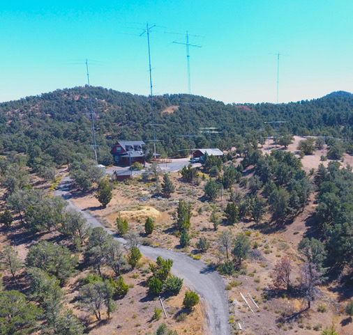

| This note was prepared by Tom McShane, NW6P. On his behalf, I am sending it to NCDXC, MLDXCC, REDXA, and WVARA. If you have any questions please contact Tom directly at: tomnw6p@gmail.com 73, John, K6MM FROM Tom McShane, NW6P: One of my best friends is Tom K5RC, trustee of Radio Nevada: The Comstock Memorial Station (W7RN) in Virginia City, NV. He recently wrote, “ We are soliciting tax-deductible contributions to update its equipment and stock its maintenance fund. The station’s benefactor, W5FU, invested $1.2M in the station prior to his untimely death from COVID in 2020. He died without a will. The station has been operating on donations ever since and they are not enough to keep the station viable. We are soliciting donations of $30K for new equipment and $12K per year for maintenance. Tom, NW6P is heading up the funding effort." W7RN’s main operating position is three Elecraft K3’s. They were driving three ACOM 2000A until the amps all failed in December. The need is to replace the two main stations with K4D’s and KPA-1500’s. The station also has three remote hosts that are very active with members across the Country who make regular contributions. The contributions are just enough to cover the monthly bill for AT&T fiber that is the backbone of the remote system. The station has been manned by 132 operators since 2003. Located on his 10 acre mountain top near Virginia City, NV, it has 8 towers and 54 antennas. (see photo). W7RN is a major asset to DXers, contesters, and hams that want to learn to operate remotely. At least 60 NCCC members have operated contests there. They also host new hams interested in DXing and Contesting. Tom K5RC tells me that W7RN has raised about $15,000 as of today and that will keep the station operational. However it needs some new equipment to replace items that have failed. It would be a shame if the station fell into disrepair. Tom has committed to keeping it operational for at least the next five years. I hope members of NCDXC, MLDXCC, REDXA, and WVARA will contribute funds. It's a fabulous station and a great asset to ham radio! Those who are willing to help W7RN can send a check to The Comstock Memorial Station, Inc 370 Panamint Rd VC Highlands, NV 89521 or use PayPal Please select friends and family or we will be charged a fee. or use GoFundMe link https://www.gofundme.com/f/w7rn-needs-financial-support Thanks for considering helping Comstock Memorial Station, W7RN. 73 es DX de Tom NW6P" Tom Taormina, K5RC ARRL Life Member DXCC Top of Honor Roll (374 Mixed) CQ Contest Hall of Fame (#50) Former Editor of the West Coast DX Bulletin Former Editor of the National Contest Journal Former President of the Texas DX Society 25 Year Board Member - YASME Chaired the 1983 ARRL National Convention Comstock Memorial Station, W7RN  |